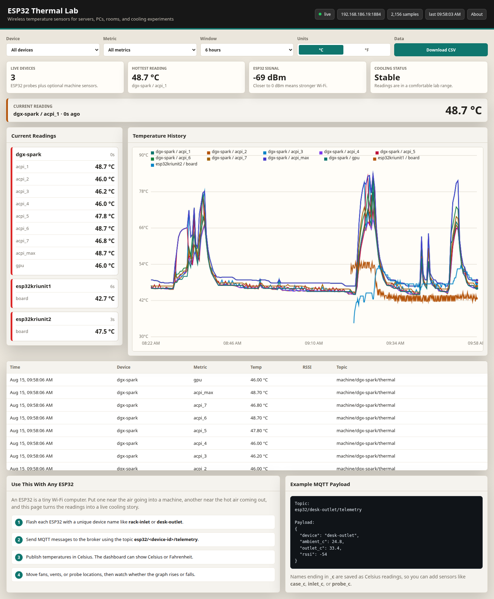
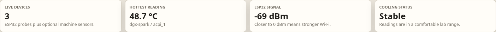
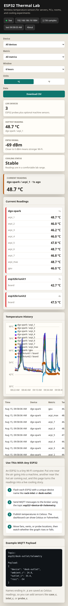

A local temperature dashboard for cooling experiments. Small ESP32 boards send readings over Wi-Fi, a Python server stores them, and a browser shows what is getting hot or cooling down.
2+wireless ESP32 probes
0cloud accounts required
CSVexport for science notebooks
Livecards, graph, and table
Why Build This?
A computer can feel cool on one side and hot on the other. Guessing is not enough. This project lets you place tiny sensors around a machine, then watch the numbers change when you move a fan, open a vent, or run a heavy workload.
The first test used two ESP32 boards near a DGX Spark system, but the design is general. You can use it for a gaming PC, server rack, refrigerator, plant box, water loop, or classroom science project.
How It Works
ESP32 probe reads temp
>
MQTT broker relays message
>
Python server stores + serves data
The ESP32 acts like a small wireless thermometer.
MQTT works like a shared message board on your local network.
SQLite stores every reading in one portable database file.
The web page updates automatically, so you can see heat changes as they happen.
Dashboard Snapshots

The full dashboard shows live readings, a temperature graph, the data table, and a simple setup guide.

Summary cards answer the first questions: how many devices are live, what is hottest, and whether cooling looks stable.

The dashboard also works on a phone, which is useful when you are moving probes or checking a machine across the room.
What Is an ESP32?
An ESP32 is a tiny computer board with Wi-Fi built in. You can plug it into USB, program it once, and let it send sensor data every few seconds. In this project, each ESP32 has a name like rack-inlet or desk-outlet.
Think of it as a digital thermometer that can talk to your computer without a long cable.
What Is MQTT?
MQTT is a simple way for devices to send messages. The ESP32 publishes a message to a topic, and the Python dashboard subscribes to that topic. It is lightweight, fast, and good for small devices.
The server uses Python, SQLite, and the Mosquitto MQTT tools. The dashboard uses plain HTML, CSS, and JavaScript. There is no framework and no build step. You can add more ESP32 boards by giving each one a new device name and publishing to the same MQTT broker.
Temperature fields ending in _c are stored as Celsius. The dashboard can switch between Celsius and Fahrenheit, and it can download recent readings as a CSV file for spreadsheets or reports.
Safety Notes
Water and electricity do not mix. Keep ESP32 boards, USB cables, and computers away from water, pumps, and condensation. Do not open a power supply. Do not disable thermal shutdown just to collect more data. If a reading gets too hot, stop the test and check airflow first.